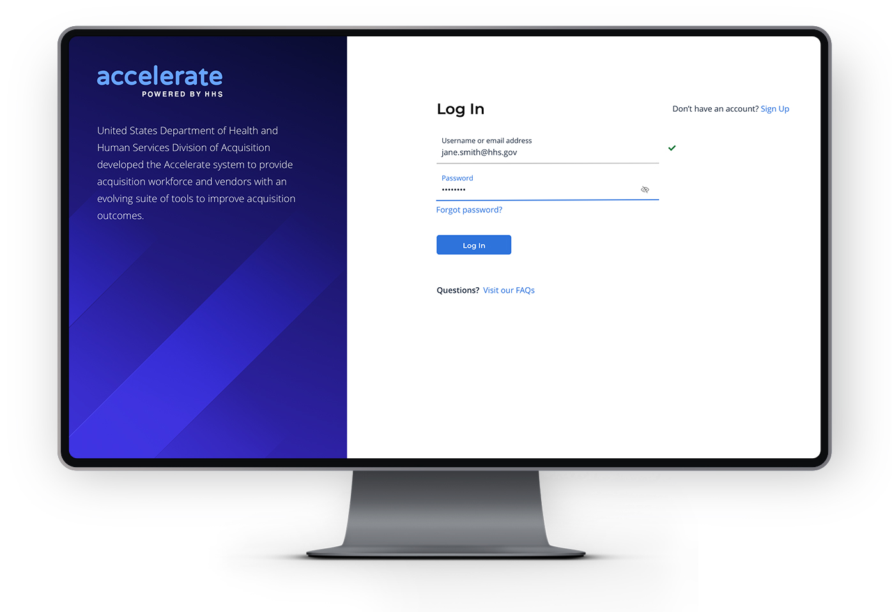

A from-scratch designed and developed enterprise workflow system for the workforce of the Department of Health and Human Services.

The project: Design a multi-role workflow communication system to help government agencies and commercial vendors connect with each other for projects and RFPs.
The challenge: Lead a 7 person creative team (split between UX and visual designers) mired by some turnover and a rough kick-off phase to deliver a clickable-prototype that felt real enough to pass for a development build.
First order of business: Re-focus the team. I spent time with every single team member, one on one and in a group together to understand what's been working well, and what's not been working so well, and get everyone on the same page about a shared, collaborative approach to our work that was effecient for everyone.
At the same time, I needed to get a lay of the land for myself - I inventoried all antcipated content for the product, identified distinct use cases needed to support user goals, and stood up the product's first all-encompassing visual site map to represent the distinct roles and portals.
The site map became a living document of sorts, evolving as the agile project moved forward and new product features were added. I used it as both a vehicle to validate scope with clients, and as the navigation model for users.
Knowing that the workflow system would require many permutations of data entry experiences, I created an interactive design system to capture the many different types of form fields and interactions we might need to support. Using Axure RP, I created global masters, available to the creative team a la carte, to expedite their own work on individual pages (drag and drop ftw!), and to standardize our deliverable presentation for downstream development resources, stakeholders, and users.
I deliberately chose Axure for this project to make the interactions as high fidelity as possible, simulating a genuinely developed prototype - not to mention its prowess in supporting simultaneous editing across a large team. We were able to rapidly ideate end-to-end prototypes, working closely with visual designers to bring in signature styles in some of the most prolific areas of the UI.
Most of the team hadn't used Axure before, so before making the switch across the project, I heard out each individual's concerns and hestitations, spent one-on-one time to train each on techniques, and in the end had garnered enthusiastic support for the switch (and probably lifetime Axure advocates).
Anticipating the browse/read/worklist aspects of the product, I also created sortable and filterable tables as part of the prototype. This interaction design challenge was particularly fun in balancing the requirement for high information density rows against secondary research evidencing the usability problems inherent of overloading tables with text elements. My solution considers a nexus of usability studies, delivering a comfortable information density at first glance, supported by left-aligned primary key elements for scannability, supporting iconography adjacent to said identifier, and overflow information with actions accessible through progressive disclosure in row expansion.
Prior to when I joined the team, several team members had made some independent headway on table/list patterns - albeit not always aligned with other areas of the product, or even other team members. Seeing how fundamental table interactions were to the product, I saw this as a great opportunity to facilitate a collaborative effort with the entire creative team. I had everyone engage in user research to source well-evidenced design patterns that we could confidently align on and carry forward across the product.
In the end, each team member felt personally vested in the patterns we established, and users recognized the utility in familiar behavior across disparate areas of the product.
To keep users apprised to new incoming worklist items, I created a notification system that pushes alerts to signed in users. The wireframe prototype is also interactive.
Another notable interactive deliverable for this project was the Profile page. Rather than have a form entry experience disconnected from the display/read-only variant, I created a single page architecture. Gleaning from secondary user research on in-page form design, we anticipated that our users would be receptive to being able to visualize their entries as they populated more information. For deliverable management purposes, I even created a "View As" selector (at the bottom of the page) to quickly toggle between empty states and populated states.
From Wall Street to Washington, Dan's interaction design and UX lead work spans a range of industries and personas, creating experiences through digital products, websites, and mobile apps.